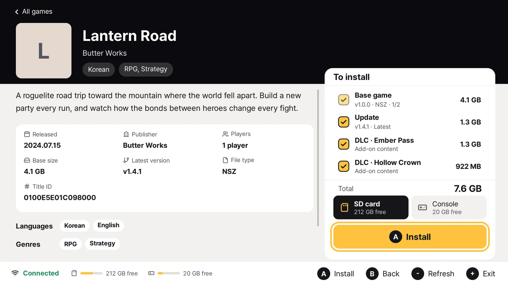

COOKINGFOIL / 02
무엇을 설치할지,
한눈에 보이도록.
See what you need.
Install what you choose.
必要なものを見渡して、
選んでインストール。
需要什么，一目了然。
安装什么，由你选择。
게임을 찾고, 설명과 용량을 확인하고, 필요한 파일만 선택합니다. 여러 서버를 쓰더라도 목록을 함께 보고 받을 서버를 고를 수 있습니다.
Find a game, read its details and size, then select the files you need. Browse several servers together and choose where a download comes from.
ゲームの説明と容量を確認して必要なファイルを選択。複数のサーバーもまとめて見て、ダウンロード元を選べます。
找到游戏，查看说明与容量，只选择需要的文件。多个服务器的列表也能一起浏览，并选择下载来源。
NSP · NSZ · XCI · XCZ